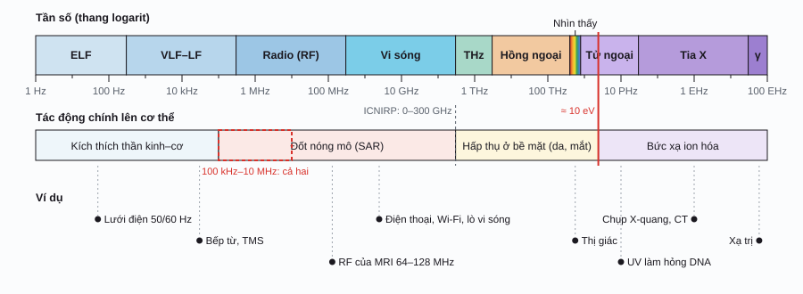

Sinh điện từ / Phần 3
Các phương trình Maxwell
Bốn phương trình gói gọn toàn bộ điện học và từ học cổ điển: điện tích tạo điện trường, từ trường không có điểm đầu, từ trường biến thiên sinh ra điện trường, và dòng điện cùng điện trường biến thiên sinh ra từ trường. Hai điều cuối kết hợp lại cho ra sóng điện từ.
Tổng quan
Mỗi phương trình có hai dạng tương đương. Dạng tích phân (integral form) nói về một mặt kín hay một đường cong kín, dễ hình dung hơn. Dạng vi phân (differential form) nói về từng điểm trong không gian, dùng trong tính toán số (ví dụ FDTD ở phần 5). Hai toán tử cần biết: divergence \(\nabla\cdot\) đo mức "tỏa ra" của một trường tại một điểm, curl \(\nabla\times\) đo mức "xoáy" của nó.
| Tên | Dạng tích phân | Dạng vi phân | Nói bằng lời |
|---|---|---|---|
| Định luật GaussGauss's law | \(\displaystyle\oint_S \vec E\cdot d\vec A = \frac{Q_{\text{trong}}}{\varepsilon_0}\) | \(\nabla\cdot\vec E = \dfrac{\rho}{\varepsilon_0}\) | Điện tích là nguồn của điện trường. Thông lượng điện qua mặt kín tỉ lệ với điện tích bên trong. |
| Gauss cho từ trườngGauss's law for magnetism | \(\displaystyle\oint_S \vec B\cdot d\vec A = 0\) | \(\nabla\cdot\vec B = 0\) | Không có đơn cực từ. Đường sức từ khép kín: bao nhiêu đi vào mặt kín thì bấy nhiêu đi ra. |
| Định luật FaradayFaraday's law of induction | \(\displaystyle\oint_C \vec E\cdot d\vec l = -\frac{d\Phi_B}{dt}\) | \(\nabla\times\vec E = -\dfrac{\partial\vec B}{\partial t}\) | Từ trường biến thiên sinh ra điện trường xoáy (suất điện động cảm ứng). |
| Ampère–MaxwellAmpère–Maxwell law | \(\displaystyle\oint_C \vec B\cdot d\vec l = \mu_0\!\left(I + \varepsilon_0\frac{d\Phi_E}{dt}\right)\) | \(\nabla\times\vec B = \mu_0\vec J + \mu_0\varepsilon_0\dfrac{\partial\vec E}{\partial t}\) | Dòng điện và điện trường biến thiên đều sinh ra từ trường xoáy. |
Định luật Gauss
Thông lượng điện (electric flux) qua một mặt là "lượng điện trường xuyên qua" mặt đó: \(\Phi_E = \oint \vec E\cdot d\vec A\), trong đó \(d\vec A\) hướng ra ngoài. Định luật Gauss nói thông lượng qua bất kỳ mặt kín nào cũng chỉ phụ thuộc vào tổng điện tích bên trong, bất kể hình dạng mặt hay các điện tích ở bên ngoài.
ΦE: thông lượng điện (N·m²/C, tức V·m); Qtrong: tổng điện tích bên trong mặt kín (C); ε₀ ≈ 8,854 × 10⁻¹² F/m.
Mặt Gauss
Kéo điện tích hoặc kéo mặt Gauss (vòng tròn xanh)Thử đặt mặt Gauss sao cho một điện tích nằm ngoài nhưng ở rất gần: một phía của mặt có nhiều thông lượng đi vào, phía kia có nhiều đi ra, và hai phần triệt tiêu đúng bằng nhau. Trong mô sống, định luật này giải thích vì sao điện tích dư chỉ tích tụ ở các mặt phân cách (như hai mặt của màng tế bào), còn bên trong một vùng dẫn điện đồng nhất thì trung hòa.
Định luật Gauss cho từ trường
Không ai từng tìm thấy một đơn cực từ (magnetic monopole). Vì thế thông lượng từ qua mọi mặt kín luôn bằng 0: mỗi đường sức đi vào thì phải đi ra. Bẻ đôi một nam châm, ta được hai nam châm nhỏ, mỗi cái đều có đủ N và S.
Thông lượng từ qua đường cong kín
Mô hình 2D: dây dẫn dài vuông góc màn hìnhĐịnh luật cảm ứng Faraday
Năm 1831, Faraday phát hiện rằng khi từ thông qua một vòng dây thay đổi, trong vòng dây xuất hiện một suất điện động cảm ứng (induced electromotive force, EMF). Điều quan trọng không phải là từ trường mạnh hay yếu, mà là nó thay đổi nhanh đến đâu. Dấu trừ là định luật Lenz (Lenz's law): dòng điện cảm ứng luôn sinh ra từ trường chống lại sự thay đổi đã tạo ra nó.
ℰ: suất điện động (V); N: số vòng dây; m: mômen từ của nam châm (A·m², ở đây 1 A·m², cỡ một viên nam châm neodymium 1 cm³); a: bán kính cuộn dây (2 cm); x: khoảng cách từ nam châm đến tâm cuộn dây.
Nam châm và cuộn dây
Kéo nam châm qua lại, hoặc bật chế độ tự dao độngĐịnh luật Ampère–Maxwell
Ampère tìm ra rằng tích phân của B dọc một đường cong kín tỉ lệ với dòng điện xuyên qua nó. Maxwell nhận thấy định luật này mâu thuẫn khi áp dụng cho tụ điện đang nạp: dòng điện chạy trong dây, nhưng không có dòng điện nào đi qua khoảng trống giữa hai bản. Ông thêm vào một số hạng mới, dòng điện dịch chuyển (displacement current), tỉ lệ với tốc độ thay đổi của điện trường. Chính số hạng này cho phép sóng điện từ tồn tại.
Với tụ phẳng bản tròn bán kính 5 cm, khe 2 mm (C ≈ 34,8 pF) nạp qua điện trở R: \(I(t) = \frac{U}{R}e^{-t/RC}\). Giữa hai bản, \(I_d\) luôn đúng bằng \(I\) trong dây.
Tụ điện đang nạp
Kéo vòng Ampère dọc trục, chỉnh bán kính của nóSóng điện từ
Faraday nói: B thay đổi sinh ra E. Ampère–Maxwell nói: E thay đổi sinh ra B. Hai quá trình này nuôi nhau và lan ra không gian thành sóng điện từ (electromagnetic wave), với E và B vuông góc nhau và vuông góc với hướng lan truyền. Maxwell tính được vận tốc của nó từ hai hằng số điện và từ, và thấy nó trùng với vận tốc ánh sáng: ánh sáng là sóng điện từ.
f: tần số (Hz); λ: bước sóng (m); εr: hằng số điện môi tương đối của môi trường; h ≈ 6,626 × 10⁻³⁴ J·s (hằng số Planck); 1 eV ≈ 1,602 × 10⁻¹⁹ J.
Sóng điện từ đi vào mô
Chỉnh tần số; chọn môi trường ở nửa phảiHai điều cần nhớ cho các phần sau. Thứ nhất, εᵣ của mô thay đổi theo tần số (giá trị trong demo chỉ gần đúng quanh 1 GHz); đó là nội dung của phần 4. Thứ hai, mô dẫn điện nên sóng bị hấp thụ khi đi vào, biến thành nhiệt; demo này bỏ qua hấp thụ và sóng phản xạ. Phần 5 sẽ tính lượng năng lượng bị hấp thụ (SAR).

Lịch sử
- 1831
Michael Faraday: cảm ứng điện từ
Faraday thấy dòng điện xuất hiện trong một cuộn dây khi đóng hoặc ngắt mạch cuộn dây bên cạnh, và khi đẩy nam châm ra vào cuộn dây. Chỉ có sự thay đổi mới sinh ra dòng điện.
- 1834
Heinrich Lenz
Lenz phát biểu quy tắc về chiều của dòng cảm ứng: nó luôn chống lại nguyên nhân sinh ra nó.
- 1865
James Clerk Maxwell: lý thuyết động lực học của trường điện từ
Sau bài báo 1861–1862 (thêm dòng điện dịch chuyển), Maxwell công bố hệ phương trình hoàn chỉnh năm 1865, tính ra vận tốc sóng điện từ và kết luận ánh sáng là một sóng điện từ.
- 1884
Oliver Heaviside: bốn phương trình
Bản gốc của Maxwell có hai mươi phương trình với nhiều ẩn. Heaviside (và độc lập là Hertz) viết lại bằng ngôn ngữ vector thành bốn phương trình gọn như ngày nay.
- 1887
Heinrich Hertz: tạo và thu sóng điện từ
Dùng một bộ phát tia lửa điện và một vòng dây thu có khe hở, Hertz tạo ra và phát hiện sóng điện từ, đo bước sóng và cho thấy chúng phản xạ, khúc xạ giống ánh sáng.
- 1891
Arsène d'Arsonval: dòng cao tần và nhiệt
D'Arsonval thấy dòng điện xoay chiều tần số cao (trên khoảng 10 kHz) đi qua cơ thể không gây co cơ hay đau mà chỉ làm nóng mô. Đây là cơ sở của liệu pháp nhiệt sâu (diathermy) và của sự phân biệt "kích thích" và "đốt nóng" ngày nay. Năm 1896, ông còn mô tả hiện tượng thấy chớp sáng khi đặt đầu trong từ trường xoay chiều mạnh (magnetophosphene).
- 1985
Anthony Barker: TMS
Nhóm của Barker ở Sheffield (Anh) lần đầu dùng xung từ trường từ một cuộn dây đặt trên đầu để kích thích vỏ não vận động, làm co cơ bàn tay: kích thích từ xuyên sọ không xâm lấn, một ứng dụng trực tiếp của định luật Faraday.
Tài liệu tham khảo
- D. J. Griffiths, Introduction to Electrodynamics, chương 7 (điện động lực học) và chương 9 (sóng điện từ).
- J. Malmivuo, R. Plonsey, Bioelectromagnetism, 1995, chương 22–23 (kích thích từ). bem.fi/book.
- ICNIRP, icnirp.org: hướng dẫn giới hạn phơi nhiễm trường điện từ (sẽ dùng ở phần 5).
- Maxwell's equations và Transcranial magnetic stimulation trên Wikipedia.